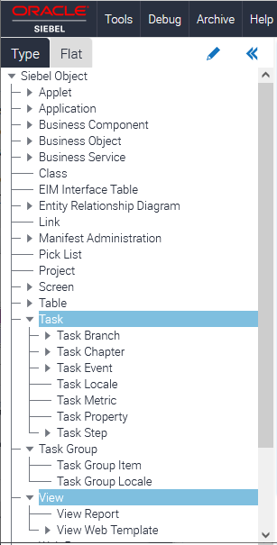

Displaying Object Types Used to Develop a Task
The following image shows the Task object type hierarchy in the Object Explorer. The key Task objects available under Siebel Object as shown in this image are: Task, Task Group, and View.

The following procedure shows how to display the object types that you use to develop a task in the Object Explorer. For more information about object types, see Siebel Object Types Reference.
To display the object types you use to develop a task
-
In the Object Explorer, click Edit (the pencil icon).
-
Scroll down through the Object Explorer hierarchy list until you locate the following object type(s), which you use to develop a task:
-
Task (Task Branch, Task Chapter, Task Event, Task Locale, Task Metric, Task Property, Task Step)
-
Task Group (Task Group Item, Task Group Locals)
-
View (View Reports, View Web Template)
-
-
Select the check box next to each of these object types.
If you add a check mark to a top-level object type, such as Task, then a check mark is also added to all Task child objects. You can expand the parent tree to display only some child objects.
-
(Optional) Select the check box next to other object types that you might use to develop a task:
-
Expand the Applet tree, and select the check box next to Applet Message (and all its child object types).
-
In the Applet tree, make sure Applet User Prop includes a check mark.
-
In the Applet tree, expand the Control tree, and select the check box next to Control User Prop.
-
Expand the Business Component tree, and select the check box next to Business Component User Prop.
-
Select the check box next to the Symbolic String tree (and all its child object types).
-
-
Click Save.
For more information about the Object Explorer and displaying object types in the Object Explorer, see Using Siebel Tools.